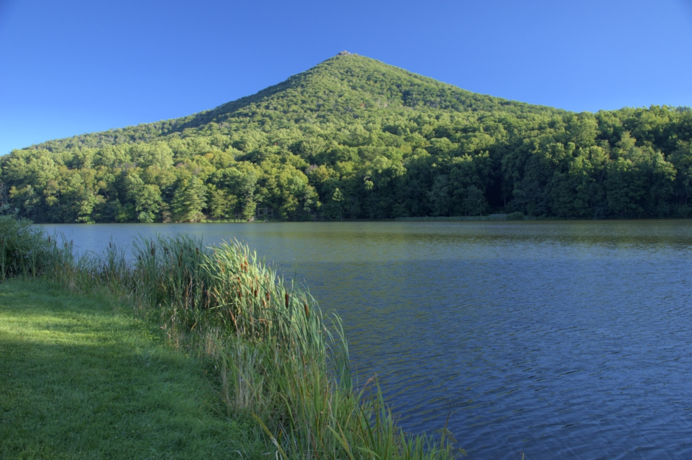
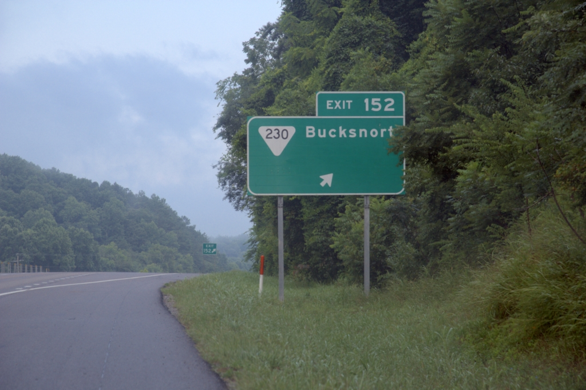
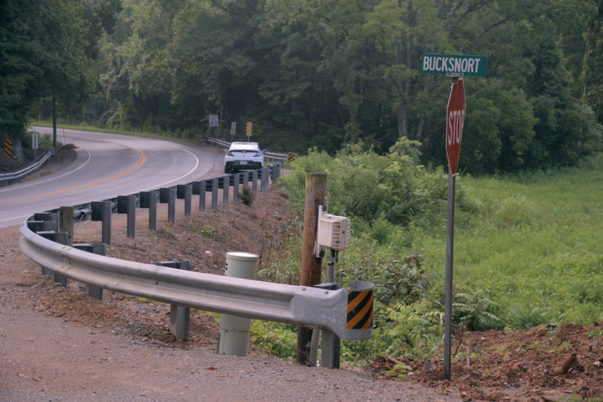
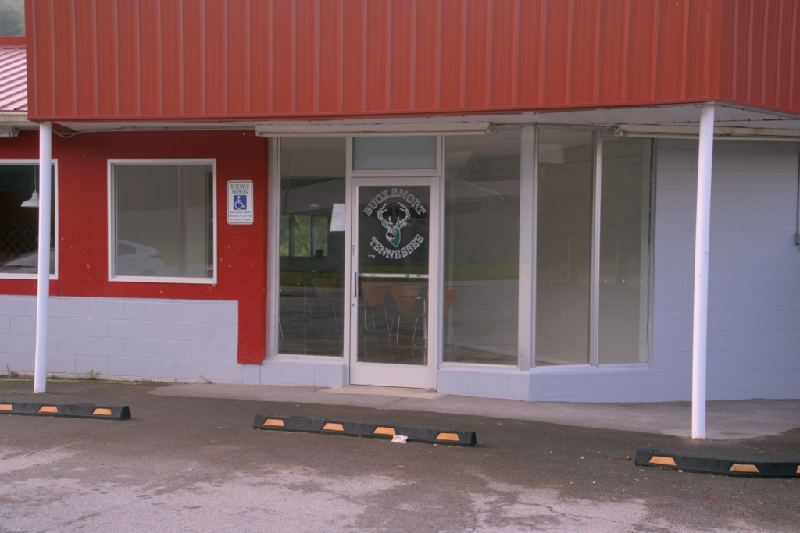
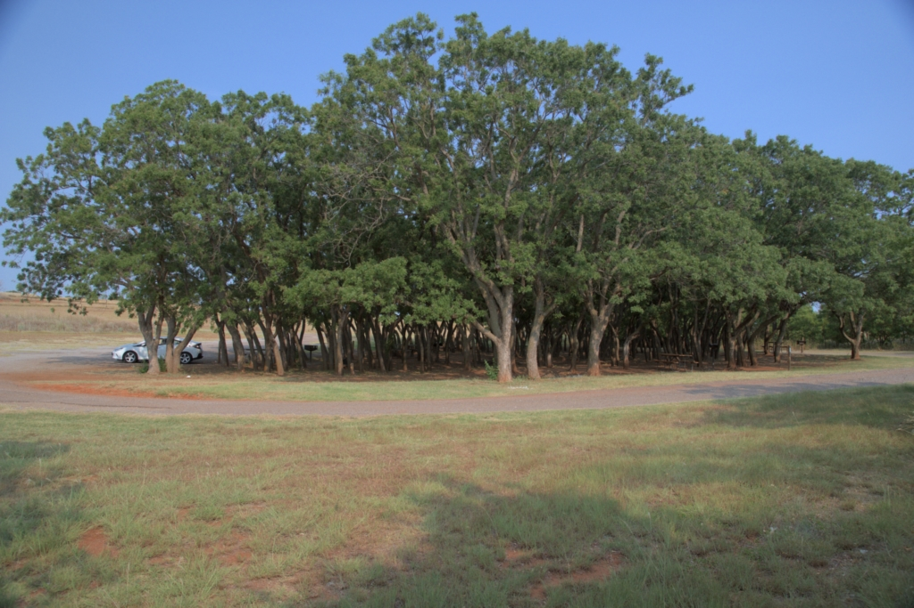
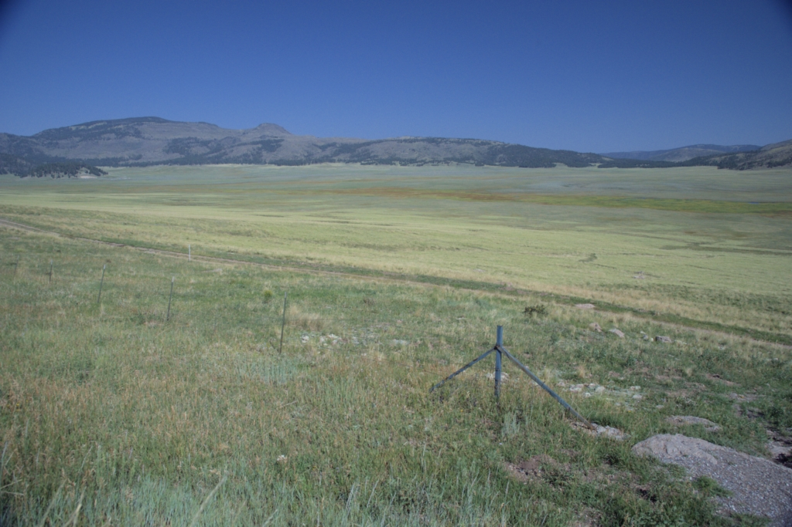
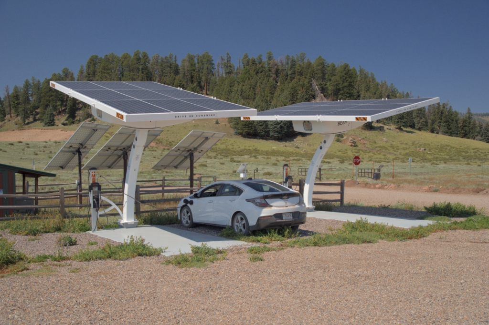
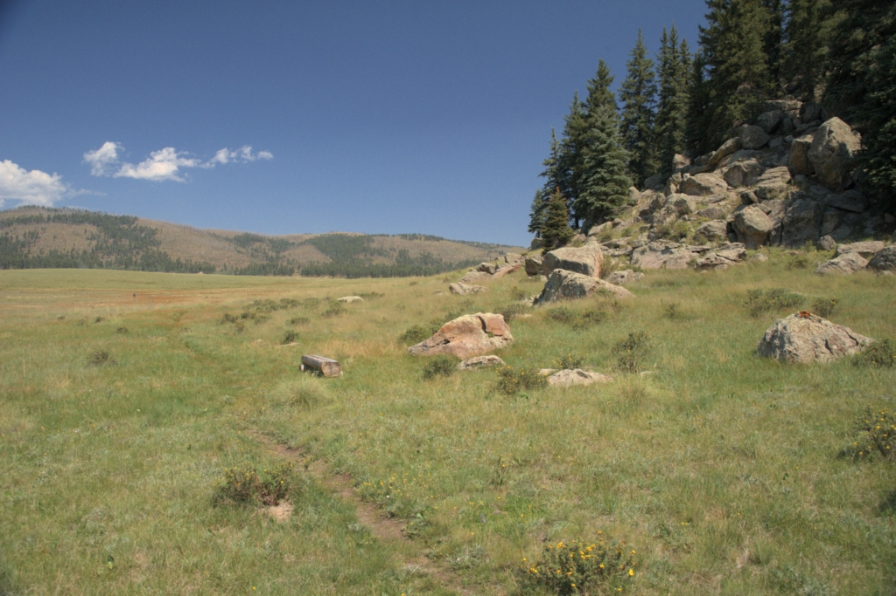

I had gotten most things ready, so it didn't take long to put all the stuff in the car and do a few last minute things. I left Groton around 9:30.
Today I got as far as a state park in PA southeast of Scranton.
This was another driving day. I got almost to Roanoke, and ended up staying at the Peaks of Otter campground on the Blue Ridge Parkway.
Coincidentally, I also stayed here last year. I am two days ahead of last year, relative to the start of Masters. Last year, I also went to the church in Hendersonville NC. Skipping that this year would put me three days ahead of last year. That's good since last year felt rushed.
I had been thinking of going to Big Bend National Park, but just three extra days for that doesn't seem enough. I guess I'll give up on that this year.
There was a little time after setting up the tent and befofe it getting dark, so I walked around the pond that is between the campground and the lodge. There is a free public charging station at the lodge, so I was able to partially charge up the car while walking around the pond.
The pond is between two peaks, Sharptop Mountain to the south and Roundtop Mountain to the north. At one point, Sharptop was thought to be the highest point in Virginia. A piece from there is apparently in the Washington Monument for that reason. It was later found that it was not quite the highest point, with Roundtop being one of the points a little higher.
 |
| Sharptop Mountain from across the pond. |
Another driving day. It looked a bit too far to get past Nashville, so I stayed in the Cedars of Lebanon state park just before Nashville. That is also where I stayed a year ago. I remember it being unusually expensive for a state park, and looked for alternatives. Unfortunately, none of the other state parks in the area had camping, and there is no national forest with camping around there either. Now I'm three days ahead of last year, relative to Masters.
Yes, it was expensive (over $50), but the only available sites came with electric hookup so at least the car got fully charged over night. At today's gasoline prices, that's worth about $5.
I could hear thunder in the distance in the morning before it got light out. After watching it for a while, it seemed it was coming this way. Even though it wasn't light yet, I got up, packed up the tent, and got out of there. It started raining just as I closed the trunk with the tent in it.
Lebanon TN is right at the eastern edge of the central time zone, so it was officially an hour earlier than I was used to. That was a big help getting thru Nashville, since it was before most people were up. It started getting light about at the middle of Nashville.
I had noticed Hot Springs National Park in Arkansas when looking at maps a couple days ago. I hadn't heard of the place before, so decided that was my next destination.
While driving along I-40 in Tennessee, I saw a sign for Bucksnort. Leslie and I saw it driving thru here on our honeymoon in 1985, and remember it with a chuckle ever since. This time I stopped to take a picture and to see what the place actually is.
 |
| Bucksnort exit on I-40. |
I was hoping to find the Bucksnort Town Hall, but it's apparently not actually a town. The only things I could find with "Bucksnort" on it were a dirt road and an abandoned building.
 |
| Bucksnort road. Yes, it's dirt. |
 |
| Abandoned general store and cafe, or whatever this was. |
The building is not currently in use. It looked like it might have been a store or restaurant. Now its parking lot is used for the adult shop across the street. That, and a gas station seem to be all that Bucsksnort is today.
I got to Hot Springs National Park at about 15:30. The campground was already full, and it requires reservations using the recreation.gov web site anyway. At least there was cell phone coverage there, and a nice shady place to park so that I could get on line and figure out what to do.
I want to spend one whole day here exploring the park, so two nights in the campground. There was one site available for Sunday and Monday night, so I signed up for that. Looking around the web site, I found there is a campground in the nearby recreation area of a dam. Most sites were open, so I grabbed one for tonight.
The federal old-fart pass is really paying off. The camping fee is normally $30/night, but only $15/night with the pass. This applied to the Peaks of Otter campground on Thursday night too, so the pass has already saved $60 this trip alone.
The campground below the dam is only 14 miles from the National Park. After setting up the tent, I poked around the recreation area. It was about 90°F, so looked for a place to swim. There is a boat ramp below the dam. I went in, but the water was really cold. As I first got all the way in, some people in a boat nearby applauded. I dunked fully in and only swam a little bit before getting out again. The air now felt nice, not hot anymore.
People in a boat pulled up onto the beach by the boat ramp said the water was 52°F. That's about what it felt like. I hadn't thought about it before, but this is the water that went thru the dam, which probably comes from well below the surface of the lake. The people in the boat said that the lake is much warmer.
This morning I went to explore Hot Springs National Park. I was vaguely expecting something like a toned-down Yellowstone with hot water bubbling from the ground and maybe making terraces from the deposited minerals as it cooled. Nope. There are hot springs in the area, but they have long ago been captured and piped into town where a bunch of bathouses were built in the 1800s. The park is more about the history of the bathouses than anything else. The visitor center is in one of the old bathhouses, and serves as a museum. The main attraction seems to be "Bathouse Row" in the center of town.
There is a pretty auto-loop and many trails on one of the hills above the town. I explored that a bit. It was nice, but nothing special.
After realizing I'd pretty much seen the place already, I cancelled my Monday night reservation in the park. I'll stay here tonight, then move on in the morning.
A driving day. I made it to Foss State Park in Oklahoma. This is definitely out on the prarie now. The area is mostly grassland with an occasional clump of trees in low spots where there is more water.
The park has several campgrounds. There were a few RVs in the one with hookups. I went to the more primitive one called "Chinaberry". It's a clump of trees (locust?) with a loop road around them.
 |
| Chinaberry campground of Foss State Park. My tent is set up a bit to the right of the car in this picture. It's not visible in the shade. |
This campground is right on the lake, so I took a dip.
Today I made it to the Storrie Lake State Park a little north of Las Vegas New Mexico. It's nothing special. I set up my tent in one of the "primitive" areas.
Yesterday I noticed the Las Vegas National Wildlife Refuge south of town, so went to explore that this morning. It's nicely done. I did the short loop trail around the visitor center. It's mostly wide open grassland with a clump of trees in one place. I did see a coyote prowling around on the other side of the pond, and four falcons flying around by the clump of trees. I don't know what kind of falcons, but definitely smaller than Perigrins.
After the wildlife refuge, I went north and west into the national forest. Tonight I was finally able to stay someplace that wasn't a formal campground. I ended up putting the tent off the side of the dirt road to American Spring.
I kept going on the road thru the national forest, heading roughly towards Phoenix. Masters starts Monday morning, so I've got three nights before I have to be close to Phoenix. I could make it to just outside Phoenix in one day if necessary, so that gives me plenty of time to poke around.
Before long, I came across the Valles Caldera National Park. I'd never heard of it before, so went to check it out. It's an ancient caldera that collapsed a million years ago, then uplifted again.
 |
| Valles Caldera |
There are free solar-powered car charging stations at one of the sites.
 |
| Free solar-powered car chargers at the entrance station. Cerro La Jara is in the background. |
It is strange how each of the solar panels point in a different direction. It doesn't make much sense at first glance. Not sure what is going on here.
After checking out the visitor center I went back to the entrance station and plugged in my car. It worked, even though the folks in the visitor center said it might be disabled.
The entrance station is right by Cerro La Jara, the little peak that got created in the middle of the caldera during the last uplift. I walked the trail around it while the car was charging.
 |
| Trail around Cerro La Jarra, the small central peak of the caldera. |
By the time I checked email, ate a little, and did a few more things on line, the car was fully charged.
I continued thru the National Forest, then headed south. Eventually I ended up in Zuni Canyon of the Cibola National Forest.
The bottom of Zuni Canyon is at over 7500 feet elevation, so it got nicely cool during the night. Before heading out of the Cibola National Forest, I hiked up the dirt road to the top of Mount Sedwick. That's 5.3 miles round trip with the top being about 450 feet higher than the start.
After Cibola, I headed to Winslow Arizona where I know of a swimming spot southeast of town.
Having cooled off, I headed south into the Coconino National forest and stayed the night off of an obscure dirt road just above the Mogollon Rim. There were three elk standing around when I got there. Later, another one wandered close to camp.
I woke up to the sound of elk calling. This day I decided to head north for a dip in Upper Lake Mary, southeast of Flagstaff. The lake level is really low this year, past the end of the boat ramps. I couldn't see any water at all in Lower Lake Mary.
So far, coverage for the cell modem in my laptop has been better than the coverage for the cell phone. The modem uses Verizon as the carrier, whereas the cell phone is with Google Fi. I was trying to get on the internet with the laptop, but couldn't find anywhere that worked. At a picnic area on Lower Lake Mary, I had strong cell phone coverage but no internet connection from the laptop.
I gave up and used the cell phone as a WiFi hotspot. That worked. A little while later Leslie called and said that Verizon had a network-wide problem. I tried the cell modem again, and it worked now.
This is the last night before needing to be close to Phoenix. I stayed off the side of a dirt road in the Coconino National Forest on the west side of Lower Lake Mary.
My plan for today is to hang out in the general Flagstaff area, where it's considerably cooler than Phoenix. I hope to be where I can camp north and east of Phoenix by 18:00. That means I should leave the Flagstaff area by 15:00.
I swam again in Lower Lake Mary, then went to a nice shady spot in the national forest close to I-17, which is they route to Phoenix.
This is probably the last update to this page until after Masters.
At the Microchip Masters conference in Phoenix Arizona.